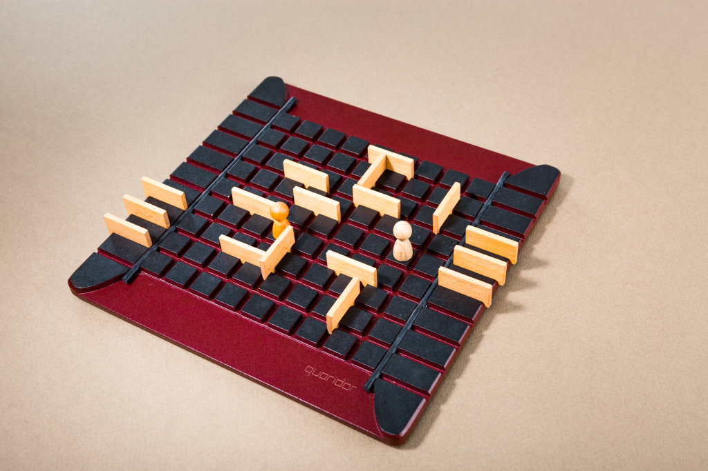

게임내 모든 정보가 공개되어 있는 게임을 뜻한다. 보통 다음과 같은 특징을 지니고 있지만 항상 그런 것은 아니다.
바둑과 체스로 대표된다. 게임 내의 모든 상황이 양 플레이어 모두에게 공개되어 있으며 보통은 자신의 기물 하나를 움직일 수 있으며, 양측의 목표는같다. 운의 요소가 크고 잔룰이 많은 마작 역시 추상전략으로 분류된다. 게임들은 보통 유로게임에 비해 시작하기는 편하나 제대로 하기는 매우 어려우며 바둑이나 체스는 프로대회까지있을 정도로 깊은 게임성을 가지고 있다.
